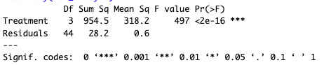

33 Q4: One-way ANOVA
Research Question:
Is there a significant difference in the algal growth when different nutrients (N, P, NP, or none) are added to water from the north basin of Lake Windermere?
Algal bio-assays are a common way to measure nutrient limitation in aquatic water bodies. In these experiments:
- Water containing algae is sampled from the body of water
- The water is divided into different samples.
- One sample is reserved as a control and is not modified. The other samples are supplemented with various nutrients, usually nitrogen (+N), phosphorus (+P), and a combination of both (+NP).
- All the samples are exposed to light for several days or weeks so the algae can grow.
- Algal growth is measured as the fluorescence of chlorophyll-a in the water sample.
If either nitrogen or phosphorus is limiting algal growth, the algae should grow faster than the control when that specific nutrient is added. If both nutrients are co-limiting, then only the combined treatment (+NP) will have faster growth than the control.
Questions:
Looking at the research question and the data:
- What do you think the outcome variable is?
- What kind of variable is it (e.g. categorical, discrete, continuous)?
- What do you think the predictor variable is?
- What kind of variable is it (e.g. categorical, continuous)?
Looking at The Flow Chart™:
- How far could you navigate through The Flow Chart™ based on your answers above?
- Can you get all the way to a test? Why or why not?

33.1 Prepare the data
Algae are single celled organisms that grow exponentially. When each cell divides it produces two cells, so the number of cells doubles each generation. For this reason, data of algal growth are usually log-transformed, which makes exponential differences into linear differences.
Log10 transform the chlorophyll-a variable, using the usual method (i.e. create a new column with the results of a mathematical operation on the original chlorophyll-a column). (Remember we did this in week 3.)
You can assume that these log-transformed data are Normally distributed.
Additionally, we need to subset our data in two ways:
- We only need to compare means from the final day of the experiment (day 21).
- We only need the data from water collected from the Windermere North basin, not from the other three lake basins in the larger experiment.
Remember that you can subset data by multiple columns using the & symbol.
33.2 Hypotheses
Next, we write down our null and alternative hypotheses.
\(\mathrm{H}_0\): There are no significant differences between the log(Chla) concentrations in any of the nutrient addition treatments (i.e. there are NO limiting nutrients).
\(\mathrm{H}_\mathrm{A}\): There is a significant difference between the log(Chla) concentrations in some of the nutrient addition treatments (i.e. there is at least one limiting nutrient).
33.3 One-way ANOVA
The function for an ANOVA test in R is aov(). (Remember that ANOVA stands for “analysis of variance.”)
Just like Q2 with the linear regression model:
- We need to specify the ANOVA model using R’s model formula notation, where
Y ~ Xmeans “Y is predicted by X”. - We need to use the
summary()function to look at our results.
Modify the following code in your script, replacing the arguments with the appropriate variable names from your data. Run it.
The output should look something like the image below (but with different numbers because your model is using different data).

Question:
Based on your ANOVA analysis results:
- Is P < 0.05?
- Should you reject or accept the null hypothesis?
We will wait to write a formal sentence about our results until we do the post-hoc test.
33.4 Tukey HSD test
The ANOVA tells us that there is a significant difference, but not which samples are significantly different. For that we need a post-hoc test. The most common post-hoc test for Normally distributed data is Tukey’s Honestly Significant Different test, usually abbreviated Tukey’s HSD test.
In R, the function for Tukey’s HSD test is TukeyHSD(). It only needs one argument: the statistical model (in this case, our stored ANOVA test).
The Tukey’s HSD test will directly display the results - we don’t need to use summary().
Run Tukey’s HSD test on your ANOVA test object.
Question:
Based on your Tukey’s HSD test results:
- Which nutrient addition treatments are significantly different?
- Which nutrient is limiting algal growth in the Windermere North lake basin?
Write down a formal sentence (or two) describing the outcome of the ANOVA and Tukey HSD tests. This should include:
- the result of the specific research question (i.e. in terms of the statistical tests: both the main hypotheses and which treatments are different)
- the names of the tests
- the F test statistic for the ANOVA test
- the P-values for both tests
- the implications for the bigger research question (i.e. in terms of nutrient limitation)
The test statistic and P-values are usually provided in parentheses at the end of a sentence.